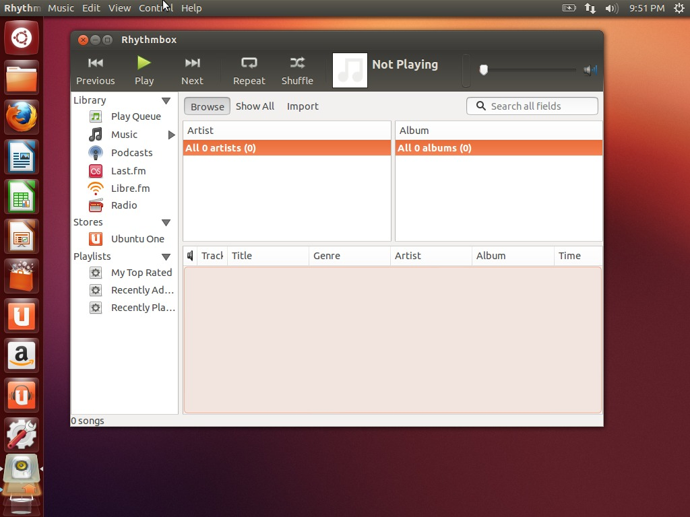
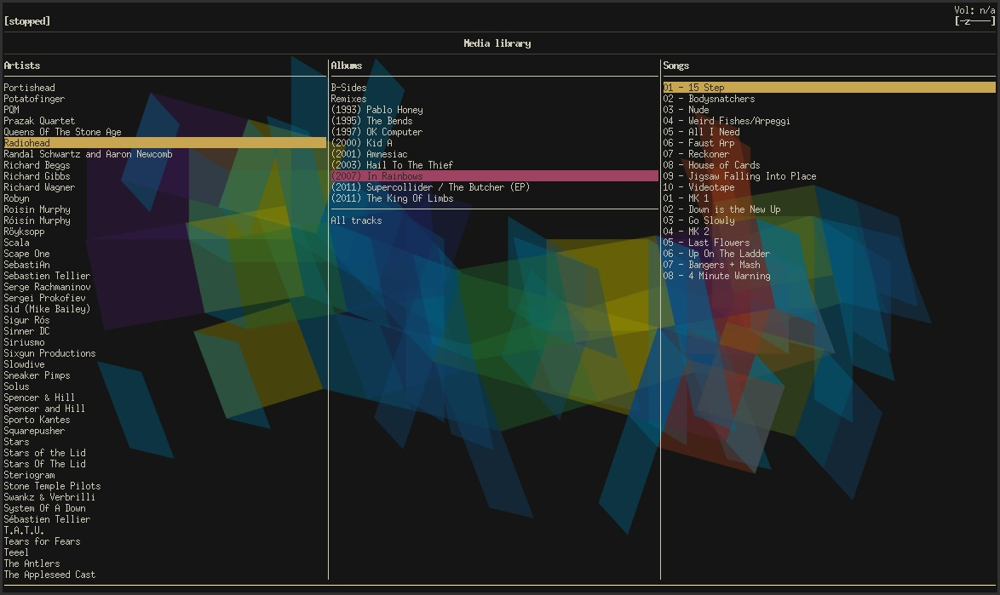
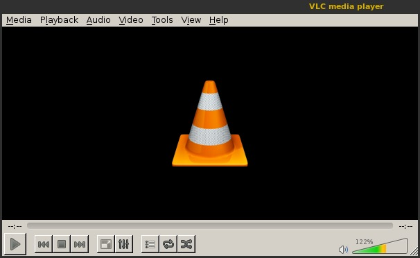
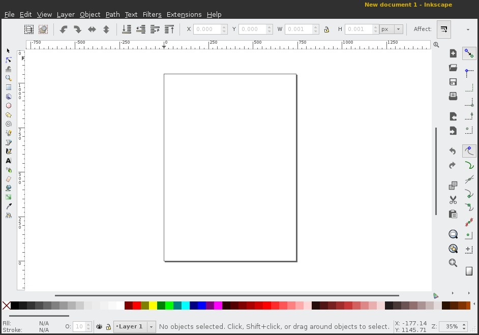
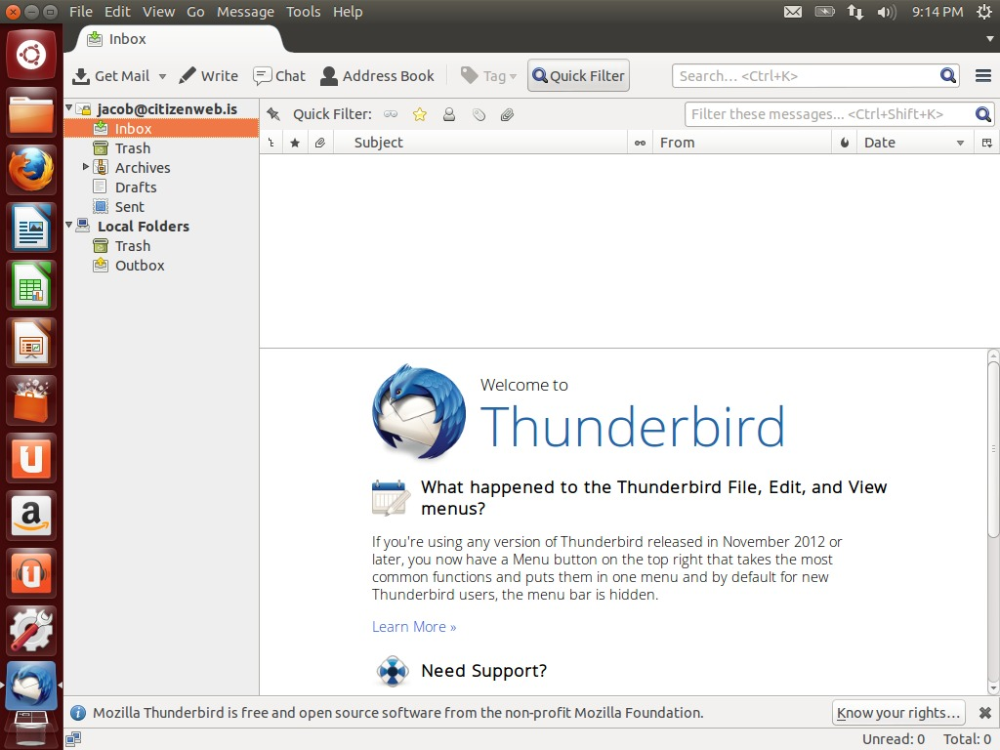
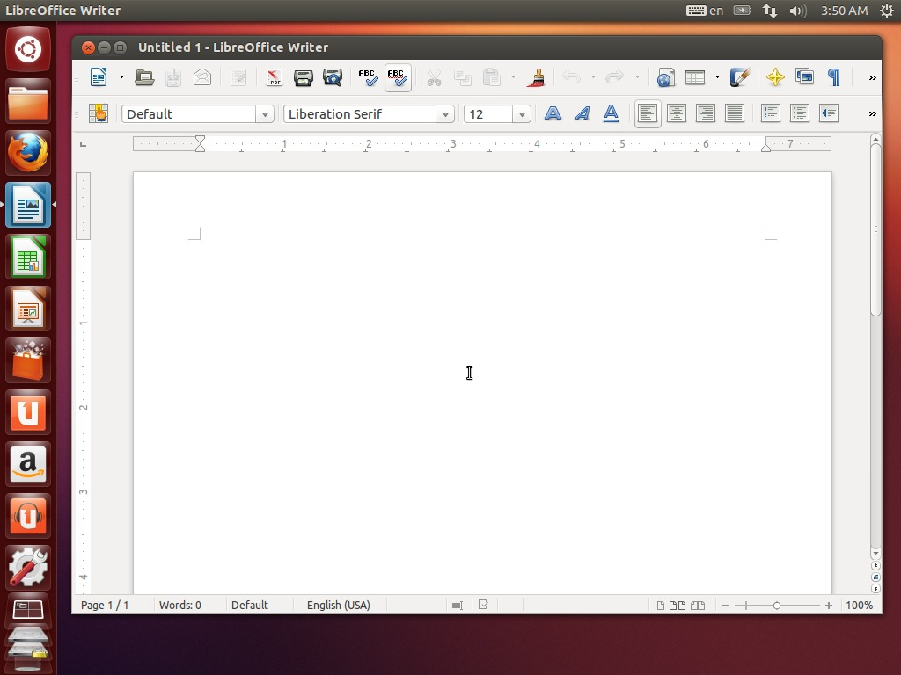
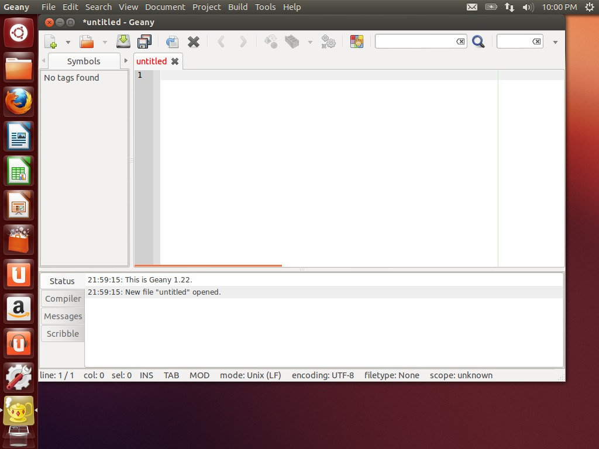

The following is a non-exhaustive list of frequently used applications and file formats that may make your switch to Linux easier. There will be multiple choices for some types of applications. On Ubuntu, most of these applications can be found in the Ubuntu Software Centre, or by running sudo apt-get install $appname in the Terminal.
The default music player that comes with Ubuntu is Rhythmbox. Rhythmbox is a decent music player with many features similar to iTunes. It has an easy-to-use library view, with integrated podcast, Last.fm and music store integration. It also features a plugins system that can extend its use beyond simple music playback.

Banshee is also a good option, and it is even more like iTunes for those who are used to its interface. For those who use KDE, you can check out Amarok or Clementine.
Another option for more advanced users is mpd. Mpd is technically an audio server that streams to local clients. When you use mpd, you will therefore set up the audio server (which is always running) as well as a client to interface with it. A favourite mpd client is ncmpcpp. It has a strange acronym of a name, but it is very fast and has a fully functional graphic/command-line interface. For those who like to customize their desktop environments, ncmpcpp is a hit, as it is as customizable as any other Terminal window.

The old standby for playing video on Linux is VLC, much like it is on other platforms. It can play a very wide variety of different video formats, supports subtitles and multiple audio tracks, and is also extensible by plugin. It's also very fast!

Ubuntu comes with a standard image viewer called Image Viewer. This is analogous to Windows' Image Preview, bringing decent quality image viewing to the GNOME desktop. For other desktop environments or distributions, Viewnior is a very fast and lightweight replacement for Image Viewer and is highly recommended.
Keeping photo libraries on Linux is easy with Shotwell. Shotwell is essentially a Linux clone of the popular iPhoto for Mac OS X. You can import images from your hard drive or directly from your digital camera. Archive your photos by date, by event or by tag.
For editing graphics, the most common open source solution is The GIMP. While not quite as fast or as usable as Photoshop, The GIMP is still very powerful and actively developed, bringing intensive image manipulation capability to Linux.
If you work with vector images or graphic design on a regular basis, check out Inkscape, which has many of the same features as Adobe's Illustrator.

The most-used option for audio editing on Linux is Audacious. Audacious is also widely used on other platforms like Windows. It is easy enough to use for beginners to audio editing or podcasting, but flexible enough for experienced professionals.
For webcams, Cheese is a good option for GNOME-based desktops. Fans of ebooks and keeping digital libraries can check out calibre, which is a very powerful and feature-rich ebook library. Brasero comes default with Ubuntu, and is used for CD/DVD burning.
Ubuntu's default text editor is gedit. Gedit is a fine standalone text editor for infrequent use. Another very fast and lightweight option is leafpad. For more text editors that might be of better use while programming, check out the Productivity section.
Ubuntu comes with a standard archive manager called (wait for it) Archive Manager. From here, you can easily create or modify your archives of many different types.
TrueCrypt is very often used by those who work with sensitive files, or simply wish to encrypt/password-protect some folders on their system.
Other utilities of use include the Terminal for running commands, vinagre for VNC connections to other computers,
Ubuntu comes installed by default with Firefox, the common cross-platform browser that (nearly) everyone loves. If you don't love Firefox, you can install Chromium, which is the Linux version of Google Chrome. There is also Opera or other browsers available for Linux.
For email, the main choice is Thunderbird, which is also installed by default in Ubuntu. It is analogous to Mail in Mac OS X, or to Microsoft Outlook for Windows. Evolution is the runner-up in the Mail category, which is included by default in the GNOME desktop. KMail is a decent option for KDE users.

For instant messaging, Pidgin is commonly used. You can use Pidgin with AIM, ICQ, MSN/Skype, Google Talk, XMPP, Facebook, IRC and many many other protocols. It is easy to use, and supports a wide variety of plugins to extend and personalize its use. Empathy is the client that comes built-in with Ubuntu, and it supports a great deal of protocols as well. Other choices include irssi for a command-line IRC client, or Quassel for a full-featured deluxe GUI IRC client.
If you are a frequent microblogger from your desktop, Qwibber comes built in with Ubuntu, and supports posting to Twitter and Identica. Other than that, Polly is a fantastic standalone Twitter client for the GNOME/Unity desktop. Those who read RSS feeds from desktop applications can check out Liferea, RSSOwl, or Akregator (KDE). Finally, Transmission is frequently used for torrent downloads and management.
The king of open source productivity software on Linux is presently the LibreOffice suite. LibreOffice includes a word processor, spreadsheet editor, presentation creator, math formula creator, and simple graphic design program. An alternative to LibreOffice is the OpenOffice suite, the ancestor project to LibreOffice.

Ubuntu comes with a built-in PDF reader called Document Viewer. It can view and edit PDFs as well as other document formats like PostScript. Lighter options for PDF readers include Zathura or MuPDF.
For programming text editors, Geany is a good option. Other options include SciTE, Bluefish or Scribes. If you are looking for a more full-featured IDE, you can try Eclipse or Aptana.
